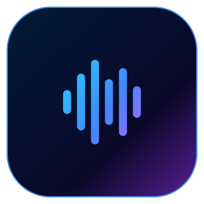

Per-app volume
Adjust or mute active apps from the menu bar. During detected calls, use system volume.

VoltraAdjust the volume of individual apps, switch outputs, and manage your audio profiles in one place.
Download Voltra for MacFree · Apple Silicon · macOS 14.2 or later
How to installAdjust or mute active apps from the menu bar. During detected calls, use system volume.
Choose your input and output, and switch automatically when a preferred device connects.
Save your settings and apply profiles when an app opens, a device connects, or a scheduled time arrives.